Et si je vous disais que vous pouviez automatiser toute votre stratégie de trading crypto dès maintenant ? Pas de code, pas besoin de surveiller les graphiques. Vous configurez et vous oubliez. Dans cette vidéo, je vous présente les six bots de trading de Blowfin. À la fin de cette vidéo, vous aurez un bot qui tourne 24h/24 et 7j/7 et qui trade pour vous. C'est parti. Première chose à faire, vous avez besoin d'un compte Blowfin. Si vous n'en avez pas encore un, cliquez sur le lien dans la description. Vous aurez accès à des bonus exclusifs rien qu'en vous inscrivant et en faisant du trading. Je vous montrerai exactement comment les réclamer plus tard dans la vidéo. Cela prend moins d'un
Interface & Outils : Plateforme d'échange crypto Blofin (interface de trading spot/futures et page Rewards Hub)
Contenu textuel & Code : Graphique de prix BTCUSDT Perpetual, carnet d'ordres en temps réel, stratégies de grid trading automatisées avec backtests (APY +309.61%, +403.73%)
Action / Démonstration : Présentation de l'interface de trading et des fonctionnalités de bots de trading automatisés sur Blofin
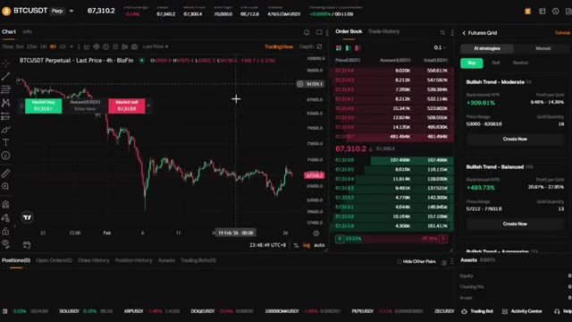
🔍 Agrandirminute pour créer votre compte. Une fois connecté, assurez-vous d'avoir des fonds sur votre compte. Si vous devez faire un dépôt, allez simplement dans actifs, cliquez sur dépôt, sélectionnez USDT, choisissez votre réseau. Je recommande TRC20 pour des frais bas et envoyez vos fonds. Ils arriveront en quelques minutes. Passons maintenant aux bots. Survolez futures dans le menu supérieur et cliquez sur bots de trading. C'est votre tableau de bord des bots.
Interface & Outils : Site web de la bourse de cryptomonnaies BloFin.
Contenu textuel & Code : Menus de gestion d'actifs, options de dépôt en cryptomonnaies (USDT) et sélection des réseaux blockchain (Tron TRC20, Ethereum ERC20, BNB Smart Chain BEP20, Polygon POS, AVAX C-Chain).
Action / Démonstration : Navigation dans le menu des actifs et sélection du réseau de dépôt TRC20 pour l'USDT.
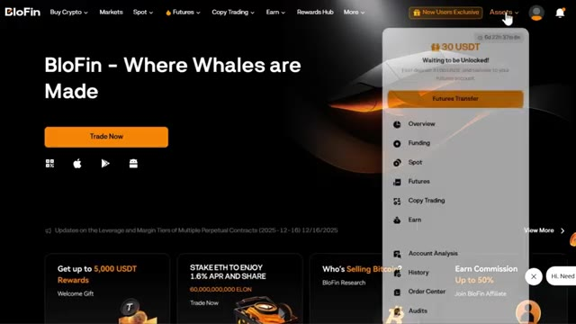
🔍 Agrandir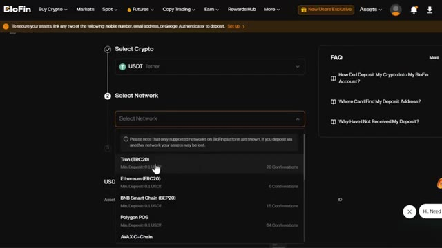
🔍 AgrandirEn haut, vous verrez votre P&L total, vos actifs totaux et vos bots en cours d'exécution. Maintenant, faites un peu défiler vers le bas et vous verrez quelque chose de vraiment sympa. Blowfin va réellement vous faire correspondre au bon bot de trading en fonction de vos préférences. Cliquez sur Essayer EasyBot. Ici, vous pouvez répondre à quelques questions comme : sur quels contrats ou quelle devise aimeriez-vous vous concentrer ?
Interface & Outils : Site web BloFin (Interface de Trading Bots)
Contenu textuel & Code : P&L total (0 USDT), Actifs totaux (0.00 USDT), Bots en cours d'exécution (0), options de création de bots (Futures Grid, Futures DCA, Spot Grid, Spot DCA, Signal Bot, TWAP)
Action / Démonstration : Présentation du tableau de bord des robots de trading et mise en avant de la fonction de correspondance des bots ("Match With the Right Trading Bot").
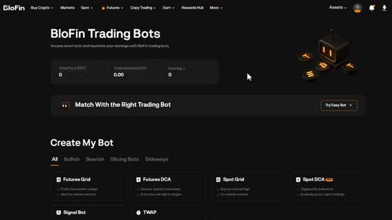
🔍 AgrandirQuelle direction de marché attendez-vous ? Haussière, baissière ou volatile ? Une fois que vous avez terminé, cliquez sur Obtenir ma correspondance. L'IA de Blowfin choisira la meilleure correspondance en fonction de vos critères. Vous pouvez voir le type de bot, l'APR testé rétroactivement, la période suggérée, et même la raison pour laquelle l'IA de Blowfin vous a associé à ce bot.
Interface & Outils : Site web de l'échange BloFin (section Trading Bots)
Contenu textuel & Code : Formulaire de sélection de robot (« Match With the Right Trading Bot ») avec le choix de l'actif (BTCUSDT) et de la direction de marché (Bullish, Bearish, Volatile), ainsi que les statistiques globales du compte (Total PnL, Total Assets).
Action / Démonstration : Le curseur de la souris survole et clique sur l'option de direction de marché haussière (« Bullish ») pour configurer le bot de trading.
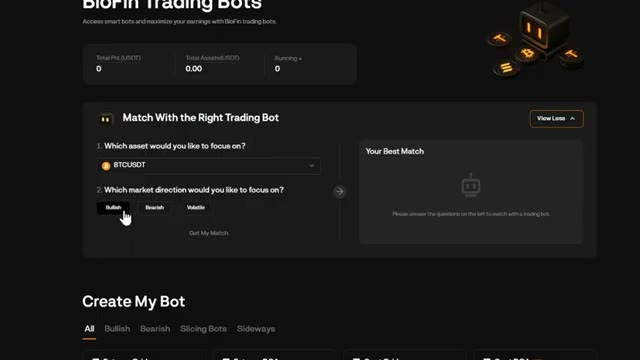
🔍 AgrandirC'est parfait si vous voulez simplement vous lancer rapidement sans trop réfléchir. Maintenant, faites défiler un peu plus bas et vous verrez la section Créer mon bot. Ici, vous pouvez voir tous les bots disponibles. Vous pouvez également voir la direction du marché et le bon bot pour cette condition de marché : des bots haussiers, baissiers, de découpage et latéraux. Nous reviendrons sur la façon d'en créer un vous-même dans quelques minutes. Faites encore un peu défiler vers le bas et vous verrez les bots IA fournis par Blowfin.
Interface & Outils : Interface web de trading / plateforme d'échange de cryptomonnaies
Contenu textuel & Code : Options de bots de trading : Futures Grid, Futures DCA, Spot Grid, Spot DCA, Signal Bot, TWAP, ainsi que des exemples de bots IA (DOGEUSDT, BTCUSDT, SUIUSDT) avec des performances de backtest (APR) et des configurations de tendance.
Action / Démonstration : Navigation et présentation des différentes catégories de bots de trading automatisé disponibles sur la plateforme.
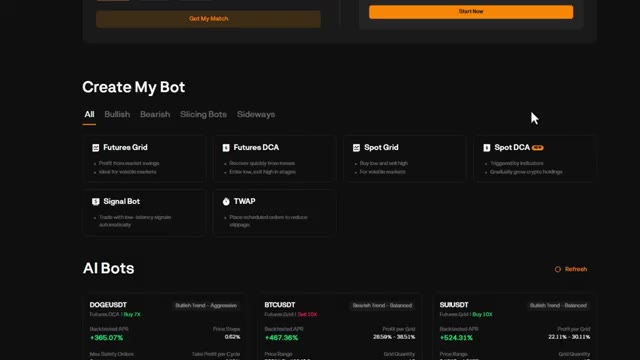
🔍 AgrandirIci, vous pouvez voir la crypto, quel genre de tendance elle suit, quel type de bot est recommandé, le biais et le levier utilisé. Vous pouvez également voir l'APR testé par rétro-calcul, le profit par grille, la fourchette de prix et la quantité de grilles. Cela vous donne une tonne de données pour décider si vous voulez copier l'un de ces bots. Une fois que vous cliquez sur créer maintenant sur l'un de ces bots, cela vous amène au tableau de bord de trading où vous pouvez voir tous les paramètres. Tout ce que vous avez à faire est de saisir votre montant d'investissement et de cliquer sur créer, qu'il s'agisse d'une position d'achat ou de vente. Maintenants que vous savez comment naviguer sur le tableau de bord, parlons de tous les types de bots disponibles. Ici, vous pouvez voir différents types de
Interface & Outils : Interface web de trading algorithmique (section "AI Bots")
Contenu textuel & Code : Cartes de bots pour différentes cryptomonnaies (DOGEUSDT, BTCUSDT, SUIUSDT, SOLUSDT, ETHUSDT, XRPUSDT) affichant le type de bot (Futures DCA ou Futures Grid), la tendance, le levier (ex: Buy 7X, Sell 10X), l'APR testé par rétro-calcul (ex: +368.57%, +467.36%), le profit par grille, la fourchette de prix et la quantité de grilles.
Action / Démonstration : Présentation et survol des différentes stratégies de bots de trading automatisé basées sur l'IA avec leurs métriques de performance.
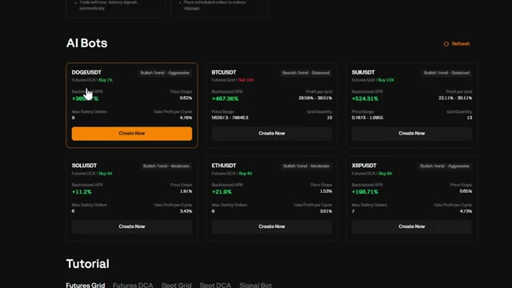
🔍 Agrandirrobots. Grille de contrats à terme. C'est idéal pour les marchés volatils. Elle tire profit des fluctuations de prix en plaçant des ordres d'achat et de vente dans une fourchette de prix définie. DCA sur contrats à terme. Il s'agit d'un achat périodique par dollar constant pour les contrats à terme. Elle achète à intervalles réguliers indépendamment du prix, ce qui est parfait pour une accumulation à long terme avec effet de levier. Grille au comptant. Cela fonctionne comme une grille de contrats à terme, mais sans effet de levier. Idéal pour les marchés stagnants où vous voulez acheter bas et vendre haut automatiquement. DCA au comptant. C'est l'option la plus sûre.
Interface & Outils : Interface web de trading automatisé / bot de cryptomonnaies.
Contenu textuel & Code : Menu de sélection des bots : Futures Grid, Futures DCA, Spot Grid, Spot DCA, Signal Bot, TWAP, et section AI Bots.
Action / Démonstration : Sélection de la stratégie Futures Grid avec le curseur de la souris.
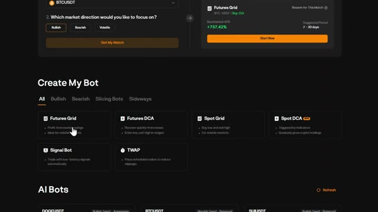
🔍 AgrandirIl achète la cryptomonnaie de votre choix à intervalles réguliers sans effet de levier, ce qui élimine l'émotion de l'investissement. SignalBot, celui-ci est unique. Il vous permet d'automatiser des transactions basées sur des signaux TradingView. TWAP ou prix moyen pondéré dans le temps. Cela répartit votre ordre sur une période définie pour éviter le glissement.
Interface & Outils : Interface web de trading automatisé / exchange crypto
Contenu textuel & Code : Options de bots : Futures Grid, Futures DCA, Spot Grid, Spot DCA, Signal Bot et TWAP.
Action / Démonstration : Sélection ou survol d'une option de bot de trading (Spot DCA).
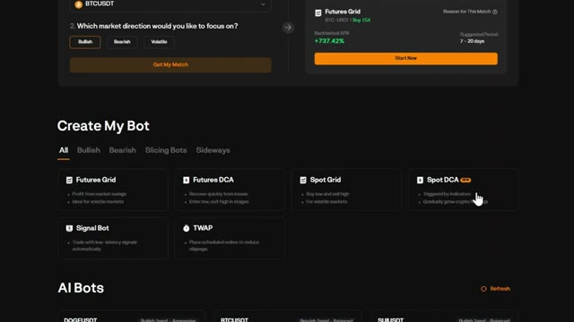
🔍 AgrandirMaintenant, laissez-moi vous montrer comment créer chacun d'eux, en commençant par le plus populaire, FuturesGrid. Créons un bot FuturesGrid à partir de zéro. C'est l'un des bots les plus populaires car il tire profit de la volatilité. Cliquez sur Futures Grid. En haut à gauche, vous pouvez sélectionner votre paire de trading. Prenons Bitcoin USDT.
Interface & Outils : Blofin (plateforme d'échange de cryptomonnaies)
Contenu textuel & Code : Graphique de prix BTCUSDT en chandelier (unité 4h), carnet d'ordres en temps réel, options de bots de trading (Futures Grid, Futures DCA, Spot Grid) et stratégies automatisées avec taux de rendement (APR) de +309.61% et +493.73%.
Action / Démonstration : Navigation et sélection de l'option de bot Futures Grid pour commencer la configuration.
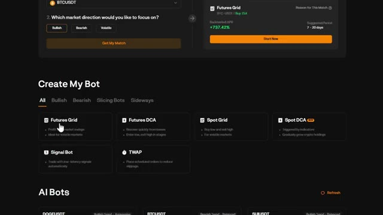
🔍 Agrandir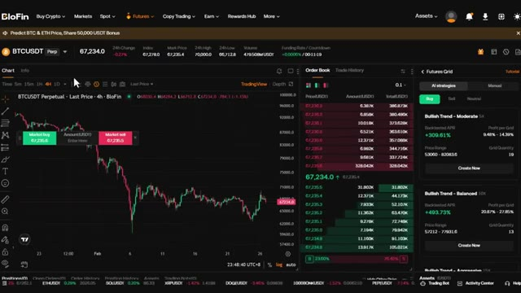
🔍 AgrandirVous pouvez rechercher n'importe quelle paire que vous voulez ici. Sur le côté droit, vous verrez les choix de Blowfin AI. Ce sont des robots pré-construits avec leurs statistiques si vous voulez les utiliser comme référence. Vous avez deux modes, les stratégies IA et le mode manuel. Commençons par la stratégie IA. Ici, l'IA de Blowfin vous montrera les robots pré-fabriqués. Vous pouvez choisir la direction ici comme achat, vente et neutre, ici vous pouvez également voir le nom du robot, l'effet de levier utilisé, l'APR testé, la fourchette de prix, les profits par grille et la quantité de grilles basée sur les conditions actuelles du marché. Une fois que vous cliquez sur créer maintenant, tout ce que vous avez à faire est d'entrer votre total
Interface & Outils : Interface de l'échange Blofin, graphique TradingView.
Contenu textuel & Code : Graphique de la paire BTCUSDT Perpetuel en unité 4h, carnet d'ordres (Order Book) en direct, et sélecteur de stratégies de bots de trading IA (Futures Grid) avec des statistiques de performance (ex : Backtested APR +309.61% et +403.73%).
Action / Démonstration : Navigation et présentation des options de stratégies IA et des performances des robots de trading sur Blofin.
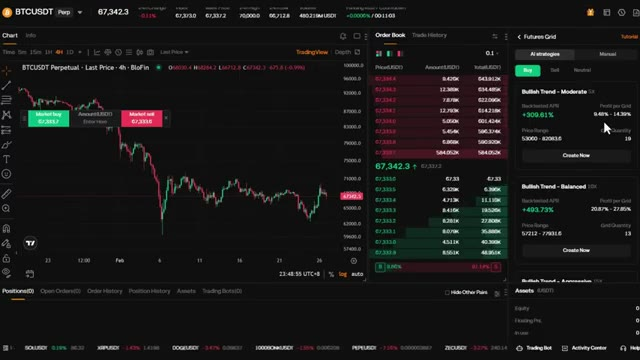
🔍 Agrandirmontant de l'investissement que vous pouvez voir sur le graphique sur le côté gauche les grilles de prévisualisation où il achètera ou vendra en fonction de vos paramètres maintenant si vous voulez un contrôle total vous pouvez passer en mode manuel en cliquant sur ajuster les paramètres. Ici, vous pouvez définir manuellement la plage de prix, le nombre de grilles et l'effet de levier vous-même. Vous pouvez également voir le take profit et le stop loss, que je recommande vivement d'activer. Ceux-ci sont optionnels, mais ils vous donnent un contrôle supplémentaire sur la gestion des risques. Vous pouvez également définir le mode de grille tel que arithmétique et géométrique. Arithmétique signifie que la différence de prix entre chaque grille est égale.
Interface & Outils : Interface de la plateforme d'échange de cryptomonnaies Blofin (section Futures / Trading Bots).
Contenu textuel & Code : Graphique du cours BTCUSDT, carnet d'ordres, paramètres du Futures Grid (plage de prix 53558.9 - 81584.7, quantité de grilles 17, effet de levier 5x, Take Profit, Stop Loss).
Action / Démonstration : Configuration des paramètres d'un bot de trading de grille, ajustement de l'effet de levier et configuration des options de gestion des risques (TP/SL).
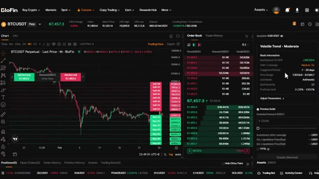
🔍 Agrandir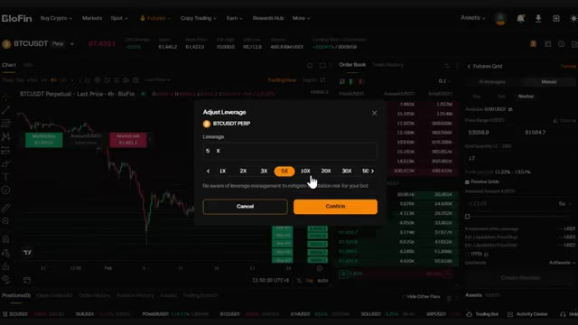
🔍 Agrandir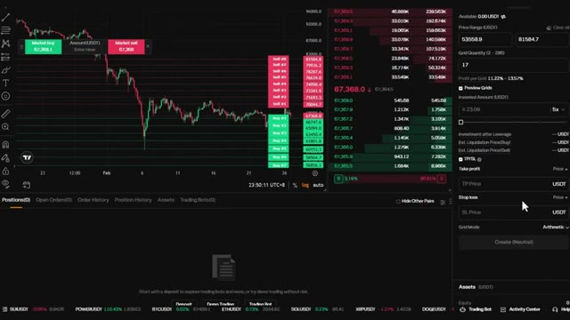
🔍 AgrandirDonc, si vous espacez les grilles de 100 dollars, chaque grille sera exactement espacée de 100 dollars. Géométrique signifie que la différence en pourcentage entre les grilles est égale. C'est mieux pour les marchés volatils parce que cela s'adapte à des variations de prix plus importantes. Une fois que tout semble correct, cliquez sur créer et votre bot de grille de contrats à terme est activé. Le suivant est le bot DCA de contrats à terme, la moyenne d'achat périodique avec effet de levier. C'est idéal si vous voulez accumuler une position au fil du temps tout en utilisant l'effet de levier pour amplifier vos rendements. Voici comment cela fonctionne. D'abord, sélectionnez votre paire de trading. Choisissez la cryptomonnaie dans laquelle vous voulez investir sur le
Interface & Outils : Interface de la plateforme de trading Blofin (section Futures Grid)
Contenu textuel & Code : Paramètres de grille de trading (Price Range: 53558.9 - 81584.7, Grid Quantity: 17, Grid Mode: Arithmetic/Geometric)
Action / Démonstration : Sélection du mode de grille géométrique dans le panneau de configuration du bot de trading.
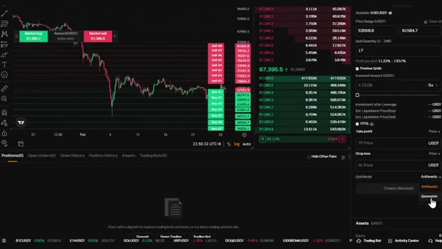
🔍 Agrandir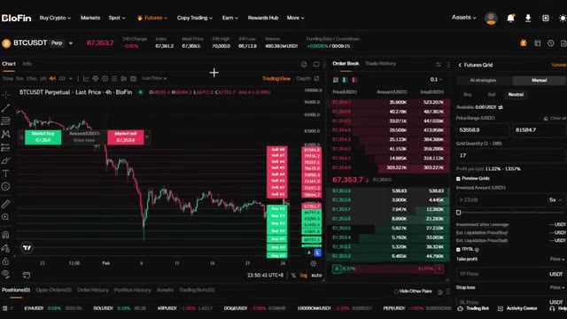
🔍 Agrandircoin supérieur gauche. Sur le côté droit, vous pouvez toujours voir deux modes comme avant, stratégies IA et manuel. Vous pouvez choisir entre achat et vente et voir les recommandations du bot IA Blowfin. Vous pouvez voir le nom, l'effet de levier utilisé, l'APR testé par le passé, le nombre maximal d'ordres de sécurité, les paliers de prix et le cycle de prise de bénéfices.
Interface & Outils : Plateforme d'échange de cryptomonnaies BloFin (interface Futures DCA avec modes AI strategies et Manual)
Contenu textuel & Code : Graphique en chandeliers du BTCUSDT (prix actuel à 67 345), carnet d'ordres en temps réel, et deux cartes de stratégies IA : 'Long-term Moderate Bullish 2X' (APR backtesté de +14.70%, 5 Max Safety Orders) et 'Mid-term Balanced Bullish 6X' (APR de +56.35%, 6 Max Safety Orders).
Action / Démonstration : Navigation et présentation des fonctionnalités de trading automatisé par IA (stratégies DCA) sur BloFin.
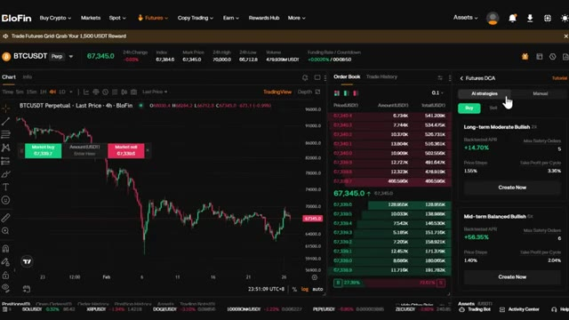
🔍 AgrandirSi vous avez sélectionné celui que vous aimez, cliquez sur créer maintenant. Ici, vous pouvez saisir le montant investi. Une fois que vous avez tout configuré, cliquez sur créer et le bot s'occupe du reste. Maintenant, si vous voulez un contrôle total, vous pouvez l'ajuster en passant en mode manuel en cliquant sur ajuster les paramètres. Ici, vous pouvez définir manuellement les paliers de prix, le take profit par cycle et les ordres de sécurité max.
Interface & Outils : Plateforme de trading crypto BloFin (interface Futures DCA avec graphique TradingView et carnet d'ordres).
Contenu textuel & Code : Paire BTCUSDT, stratégie "Bullish Trend - Moderate", paramétrage du montant investi (77,83 USDT minimum) et options du bot de trading.
Action / Démonstration : Saisie du montant d'investissement et clic sur le bouton de création du bot DCA.
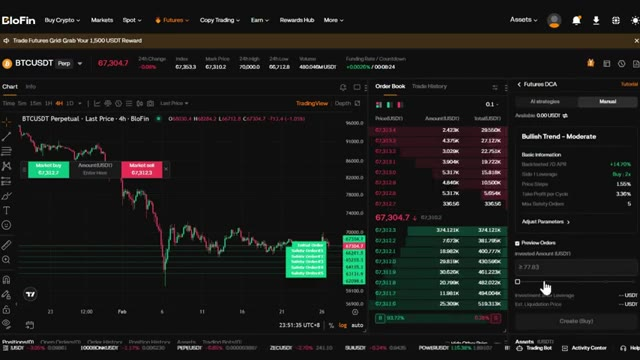
🔍 Agrandir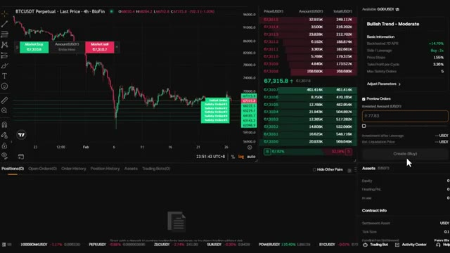
🔍 AgrandirLes paliers de prix déterminent de quelle distance le prix doit baisser avant que le bot n'achète à nouveau. Le nombre maximal d'ordres de sécurité est le nombre maximal de fois que le bot ajoutera à votre position. Le take profit par cycle définit le pourcentage de profit que le bot vise avant de fermer toute la position. Une fois que tout vous convient, cliquez sur créer et le bot sera actif.
Interface & Outils : Interface de trading d'une plateforme d'échange (type BioFin / courtier crypto) avec un graphique TradingView intégré.
Contenu textuel & Code : Paire BTCUSDT Perpétuel, graphique en chandeliers 4h, carnet d'ordres en temps réel, et paramètres du bot DCA : Price Steps (1,55%), Take Profit per Cycle (3,36%), Max Safety Orders (5).
Action / Démonstration : Configuration des paramètres du bot DCA sur l'interface latérale droite (modification du nombre maximal d'ordres de sécurité).
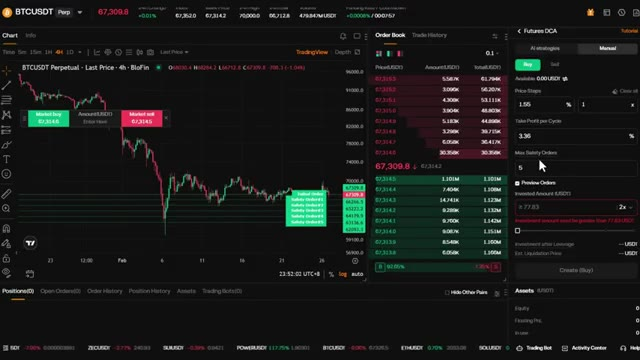
🔍 AgrandirLe robot de grille spot fonctionne exactement comme la grille futures, mais sans effet de levier. C'est parfait si vous voulez acheter bas et vendre haut automatiquement dans un marché stagnant, sans le risque de liquidation. En haut à gauche, vous pouvez sélectionner votre paire de trading. Prenons Ethereum USDT. Vous pouvez rechercher n'importe quelle paire que vous voulez ici. Sur le côté droit, vous verrez les sélections de Blowfin AI.
Interface & Outils : Blofin (plateforme d'échange de cryptomonnaies) et graphique de trading.
Contenu textuel & Code : Paires de trading BTC/USDT, options de bots (Spot Grid, Futures Grid), carnets d'ordres et stratégies AI Grid avec retours sur investissement (APR).
Action / Démonstration : Sélection et configuration d'un robot de trading de type Spot Grid sur la plateforme Blofin.
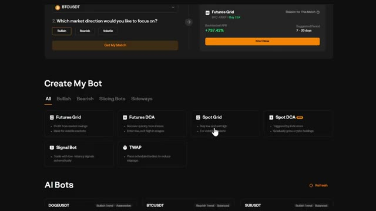
🔍 Agrandir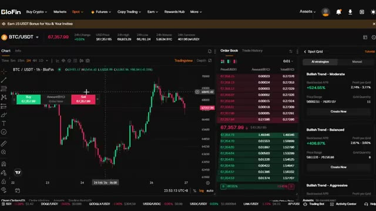
🔍 AgrandirCe sont des robots préconstruits avec leurs statistiques si vous voulez les utiliser comme référence. Vous avez deux modes, les stratégies IA et le mode manuel. Commençons par la stratégie IA. Ici, l'IA de Blowfin vous montrera les robots pré-fabriqués. Ici, vous pouvez également voir le nom du robot, l'APR testé par rétro-ingénierie, la fourchette de prix, les profits par grille, et la quantité de grilles en fonction des conditions actuelles du marché.
Interface & Outils : Plateforme d'échange BloFin (interface Web)
Contenu textuel & Code : Graphique des prix ETH/USDT en chandeliers (unité 1h), carnet d'ordres (Order Book), et panneau des stratégies IA (AI Strategies) affichant des robots de trading préconfigurés avec leurs performances estimées (Backtested APR : +476.95%, +358.30%, +230.80%), plages de prix et quantités de grilles.
Action / Démonstration : Navigation et présentation des options de stratégies automatisées par IA (AI Strategies) sur BloFin.
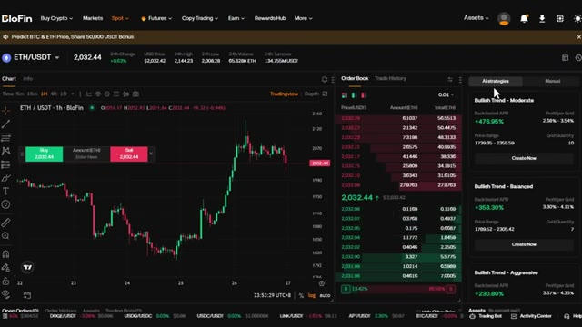
🔍 AgrandirRemarquez qu'il n'y a pas de effet de levier ici. Vous ne tradez qu'avec votre propre capital, ce qui rend cela beaucoup plus sûr. Une fois que vous cliquez sur Créer maintenant, tout ce que vous avez à faire est de saisir votre montant d'investissement total. Vous pouvez voir sur un graphique du côté gauche les grilles de prévisualisation où il achètera ou vendra en fonction de vos paramètres. Le bot placera des ordres d'achat à l'extrémité inférieure de la fourchette et des ordres de vente à l'extrémité supérieure, capturant ainsi des profits à chaque fluctuation de prix.
Interface & Outils : Plateforme d'échange de cryptomonnaies BloFin (interface Web Spot Grid).
Contenu textuel & Code : Graphique de prix ETH/USDT (2 032,77 USD), carnet d'ordres en temps réel, et options de stratégies de grille (AI strategies) affichant des performances backtestées (ex: Bullish Trend - Moderate avec un APR de +476,95%).
Action / Démonstration : Le curseur de la souris clique sur le bouton « Create Now » pour lancer une stratégie de grille automatisée sur le marché spot.
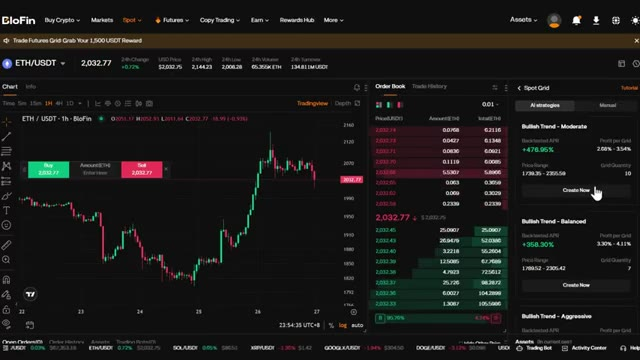
🔍 AgrandirC'est idéal pour accumuler une position au fil du temps sans effet de levier. Maintenant, si vous voulez un contrôle total, vous pouvez passer en mode manuel en cliquant sur ajuster les paramètres. Ici, vous pouvez définir manuellement la fourchette de prix et le nombre de grilles vous-même. Vous pouvez également définir le mode de grille, tel que arithmétique et géométrique, tout comme avec Futures Grid.
Interface & Outils : Blofin (Plateforme d'échange de cryptomonnaies)
Contenu textuel & Code : Paire ETH/USDT, graphique en chandeliers (unité 1h), carnet d'ordres (Order Book), et panneau de configuration "Spot Grid" en mode manuel avec les options de paramètres (fourchette de prix, nombre de grilles).
Action / Démonstration : Configuration et explication des paramètres du Spot Grid pour le trading automatisé sans effet de levier.
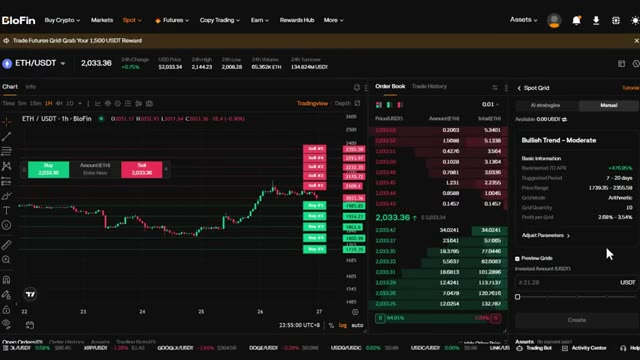
🔍 AgrandirUne fois que tout a l'air bon, cliquez sur Créer et votre robot Spot Grid est lancé. Le robot Spot DCA est l'option la plus sûre. Il est parfait pour les investisseurs à long terme qui veulent accumuler sans effet de levier et sans se soucier du timing du marché. Cliquez sur Spot DCA. Voici comment cela fonctionne. D'abord, sélectionnez votre paire de trading.
Interface & Outils : Interface web de trading/exchange de cryptomonnaies (section 'Create My Bot').
Contenu textuel & Code : Liste des types de bots de trading disponibles : Futures Grid, Futures DCA, Spot Grid, Spot DCA, Signal Bot, TWAP, ainsi que des suggestions de bots propulsés par l'IA (AI Bots).
Action / Démonstration : Le curseur de la souris survole et sélectionne l'option 'Spot DCA'.
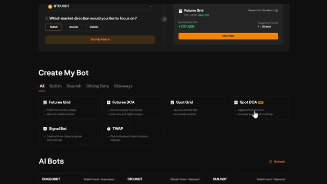
🔍 AgrandirChoisissez la crypto dans laquelle vous voulez investir dans le coin supérieur gauche. Sur le côté droit, vous pouvez toujours voir deux modes comme avant, Stratégies IA et Manuel. Vous pouvez voir le nom, le rendement testé sur données historiques, le taux annuel en pourcentage, les ordres de sécurité maximums, les paliers de prix et le cycle de prise de profit. Remarquez qu'il n'y a pas de effet de levier ici. Il s'agit de trading au comptant pur, ce qui signifie que vous n'utilisez que votre propre capital avec un risque de liquidation nul.
Interface & Outils : Plateforme d'échange crypto BloFin (interface Spot DCA avec graphiques TradingView).
Contenu textuel & Code : Paire BTC/USDT à 67,303.92 $, graphique en chandeliers (1h), carnet d'ordres, et options de stratégies IA ("Long-term Moderate Bullish" avec Backtested APR à +121.52%, "Mid-term Balanced Bullish" à +88.80%).
Action / Démonstration : Présentation des options de configuration des stratégies de trading automatisées (IA vs Manuel) et des performances historiques sur BloFin.
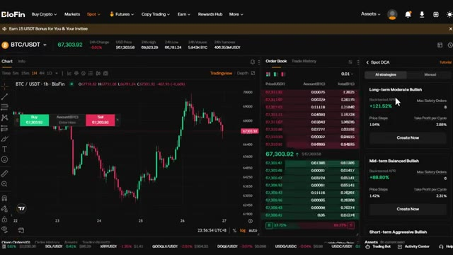
🔍 AgrandirSi vous avez sélectionné celui que vous aimez, cliquez sur Créer maintenant. Ici, vous pouvez saisir le montant investi. Le bot achètera automatiquement à intervalles réguliers, peu importe le prix. Cela supprime toute émotion de l'investissement et vous aide à vous positionner au fil du temps. Une fois que vous avez tout configuré, cliquez sur créer et le bot s'occupe du reste.
Interface & Outils : Blofin (plateforme d'échange de cryptomonnaies)
Contenu textuel & Code : Graphique TradingView BTC/USDT, carnet d'ordres (Order Book), et panneau de configuration "Spot DCA" affichant des informations de stratégie ("Bullish Trend - Moderate", Backtested 7D APR à +121,52%, Price Steps, Take Profit per Cycle) ainsi qu'un champ pour saisir le montant investi (Invested Amount (USDT)).
Action / Démonstration : Configuration et saisie du montant pour la création d'un bot de DCA (Dollar Cost Averaging) sur Blofin.
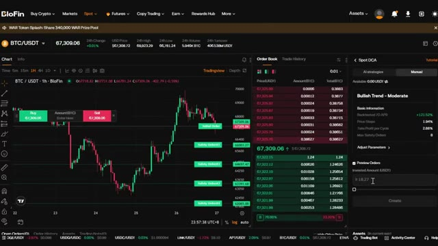
🔍 AgrandirMaintenant, si vous voulez un contrôle total, vous pouvez l'ajuster en passant en mode manuel en cliquant sur ajuster les paramètres. Ici, vous pouvez définir manuellement les pas de prix, le take profit par cycle et les ordres de sécurité maximum. C'est la stratégie ultime du « configurer et oublier ». Vous n'avez pas besoin de surveiller les graphiques. Vous n'avez pas besoin de chronométrer le marché. Vous laissez simplement le bot accumuler pour vous pendant des semaines, des mois, ou même des années. Une fois que tout est à votre convenance, cliquez sur créer et le bot sera actif. Maintenant, parlons du bot de signal.
Interface & Outils : Plateforme d'échange de cryptomonnaies Blofin (interface Spot DCA et TradingView).
Contenu textuel & Code : Paires BTC/USDT à 67,405.17 $, paramètres manuels de Spot DCA : Price Steps (1.94%), Take Profit per Cycle (2.88%), Max Safety Orders (8), et montant investi.
Action / Démonstration : Configuration manuelle des paramètres de la stratégie DCA sur Blofin avec affichage des niveaux d'ordres de sécurité sur le graphique.
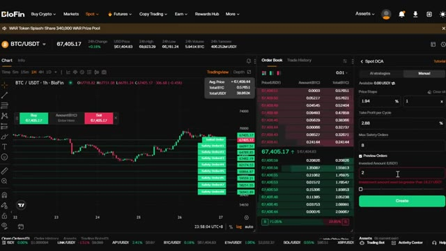
🔍 AgrandirCelui-ci est vraiment intéressant parce qu'il vous permet d'automatiser des transactions basées sur des signaux TradingView. Lorsque vous cliquez sur le robot de signal, il vous mènera au tableau de bord de trading. En haut à droite, vous verrez un bouton ajouter un signal. Cliquez dessus. Voici comment cela fonctionne. Les robots de signal Blowfin peuvent analyser des signaux générés par les scripts de stratégie TradingView. Cela signifie que si vous avez une stratégie de trading sur TradingView, vous pouvez la connecter directement à Blowfin et automatiser vos transactions. Maintenant, voici ce que vous devez savoir. Ne partagez votre webhook, URL ou jeton de signal avec personne. Blowfin prend uniquement en charge
Interface & Outils : Interface de l'échange de cryptomonnaies Blofin (plateforme Web avec graphique TradingView intégré et module de bot de signal).
Contenu textuel & Code : Paire BTCUSDT Perpétuelle, prix actuel autour de 67 374,8 USD, graphique en chandeliers japonais, carnet d'ordres (Order Book) et menu 'Signal Bot' vide avec l'option orange 'Add a signal'.
Action / Démonstration : Le curseur de la souris survole le bouton orange 'Add a signal' dans le panneau latéral droit du bot de signal sur Blofin.
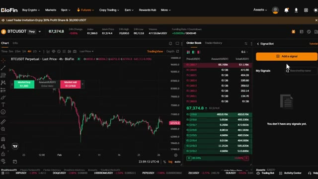
🔍 Agrandirmode de position à sens unique. Assurez-vous que votre stratégie TradingView ne repose pas sur le mode de couverture. Il peut y dans ce cas y avoir des risques de perte de signal ou de délai, puisque cela dépend d'une plateforme tierce. Très bien, voici donc comment le configurer. Tout d'abord, créez un nom de signal et une description de signal. C'est uniquement pour votre propre référence. Une fois que vous avez fait cela, cliquez sur suivant. Blowfin vous fournira une URL de webhook et un message d'alerte. Copiez cette URL de webhook. Vous en aurez besoin pour TradingView. Allez maintenant sur TradingView, ouvrez votre stratégie, cliquez sur les alertes, et collez l'URL du webhook ainsi que le message d'alerte dans vos paramètres d'alerte.
Interface & Outils : Interface web de l'échange Blofin, specifically la section Signal Bot.
Contenu textuel & Code : Texte d'instructions du tutoriel de configuration : avertissement concernant le support exclusif du mode "One-way" (sens unique), l'interdiction d'utiliser le mode "Hedge" (couverture), et les risques de perte ou de délai de signal liés à la plateforme tierce. Champs vides pour le nom du signal et sa description.
Action / Démonstration : Affichage des consignes préalables à la création d'un webhook sur Blofin pour connecter une stratégie TradingView.
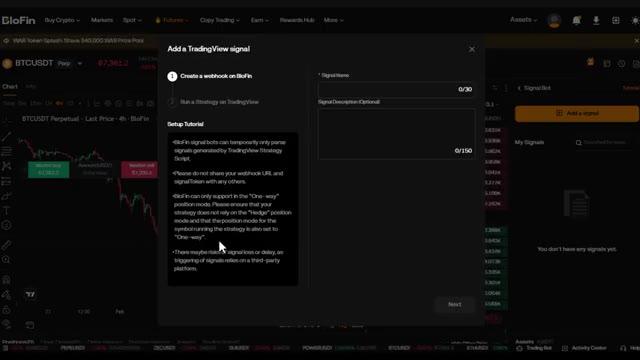
🔍 AgrandirUne fois que vous avez terminé, cliquez sur terminer sur Blowfin. Votre signal apparaîtra désormais dans Mes signaux. À partir de là, vous pouvez créer un bot basé sur ces signaux. Cliquez sur Créer un bot. Ici, vous pouvez modifier le symbole, définir votre effet de levier et entrer votre marge investie. Dans les paramètres avancés, vous pouvez choisir vos paramètres d'entrée. Vous pouvez vous baser sur le signal TradingView, utiliser une marge fixe, un pourcentage de votre marge, ou un pourcentage de votre investissement libre. Vous pouvez également activer l'entrée multiple. Cela permet au bot d'ajouter à votre position si le signal se déclenche à nouveau. C'est parfait pour
Interface & Outils : Plateforme d'échange BloFin (interface de trading Futures et Signal Bot)
Contenu textuel & Code : Graphique en chandeliers 4H du BTCUSDT, carnet d'ordres en temps réel, panneau latéral "Signal Bot" listant "TradingBot" avec le bouton "Create a bot".
Action / Démonstration : Navigation et présentation de la section "My Signals" pour configurer et créer un bot de trading basé sur les signaux sur BloFin.
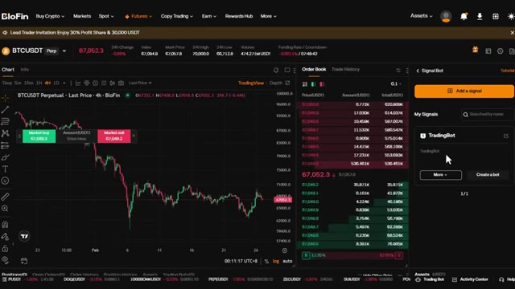
🔍 Agrandiraugmente progressivement vos positions. Définissez vos niveaux de take profit et de stop loss. Une fois que vous avez terminé, cliquez sur créer le bot. Si vous souhaitez un jour supprimer ou modifier un signal, cliquez simplement sur plus à côté du nom du signal. Le dernier bot est le TWAP, le prix moyen pondéré dans le temps. Ce bot est conçu pour répartir votre ordre sur une période définie afin d'éviter le slippage et d'obtenir un meilleur prix d'entrée moyen. Voici comment cela fonctionne.
Interface & Outils : Interface de la plateforme d'échange de cryptomonnaies Blofin (section Futures et Trading Bots).
Contenu textuel & Code : Graphique en chandeliers BTCUSDT, carnet d'ordres en temps réel, paramètres de levier, TP/SL et sélection des bots de trading (Futures Grid, DCA, Signal Bot, TWAP).
Action / Démonstration : Navigation et démonstration de la configuration d'un bot de trading, avec mise en avant du bouton de création et présentation des différents types de bots (notamment le TWAP).
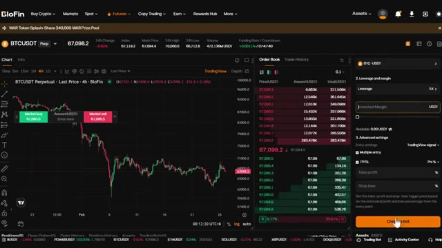
🔍 Agrandir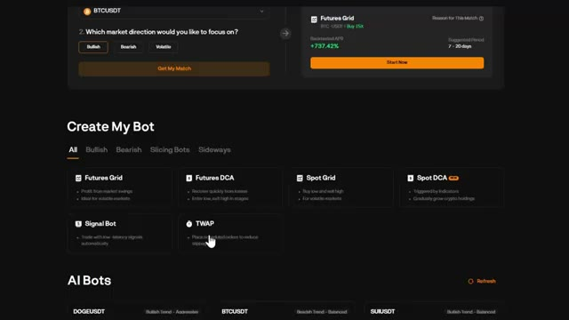
🔍 AgrandirVous pouvez voir le mode de marge et les paramètres de levier tout en haut. Ensuite, entrez le montant que vous souhaitez investir et définissez le temps total. Vous pouvez le définir en heures et en minutes. Vous pouvez également modifier la fréquence, de 5 secondes jusqu'à 60 secondes. Cela contrôle la fréquence à laquelle le bot place des ordres dans la période que vous avez définie. Voici pourquoi c'est utile. Si vous entrez sur une position importante, placer un seul ordre au marché important peut faire évoluer le prix contre vous. Le TWAP divise votre ordre en plus petits morceaux et les exécute au fil du temps, vous offrant un meilleur prix moyen et réduisant l'impact sur le marché.
Interface & Outils : BloFin (Échange de cryptomonnaies / Interface Futures et TWAP)
Contenu textuel & Code : Paire BTCUSDT Perpetual, prix à 67,130.4, options TWAP avec mode Isolated, levier 5X, champs pour le montant (Amount in USDT), le temps total (Total Time en heures/minutes) et la fréquence (30s).
Action / Démonstration : Configuration des paramètres de trading algorithmique TWAP (marge, levier, montant, durée, fréquence) sur BloFin.
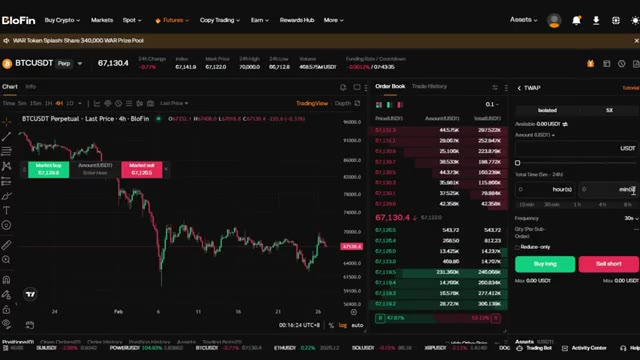
🔍 AgrandirUne fois que vous avez terminé, cliquez sur Acheter à long terme si vous prenez une position acheteuse ou Vendre à découvert si vous prenez une position vendeuse. Le bot répartira automatiquement votre ordre sur la période que vous avez définie. Maintenant, avant de terminer, laissez-moi vous montrer comment réclamer vos bonus. Si vous vous êtes inscrit avec mon lien dans la description, vous avez accès à des récompenses exclusives. Allez dans le centre des récompenses de votre compte.
Interface & Outils : Plateforme d'échange de cryptomonnaies BloFin (interface de trading, section bots, page d'inscription).
Contenu textuel & Code : Graphique BTCUSDT Perpetuel, carnets d'ordres, panneau de configuration TWAP, options pour bots de trading automatisés, formulaire d'inscription. [DESC_IMAGE_1] Navigation sur l'interface de trading BloFin et visualisation du panneau de placement d'ordres TWAP. [DESC_IMAGE_2] Présentation des outils de trading automatisé (Trading Bots) sur BloFin. [DESC_IMAGE_3] Affichage de la page d'inscription partenaire sur BloFin.
Action / Démonstration : Explications face caméra et analyse conceptuelle des marchés.
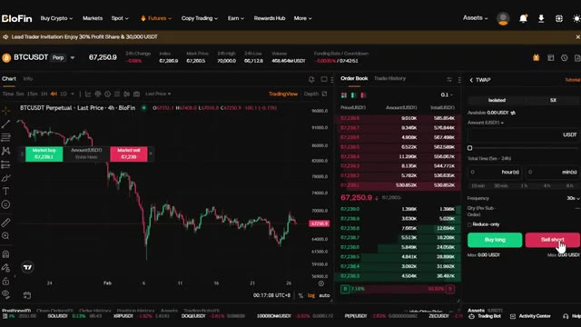
🔍 Agrandir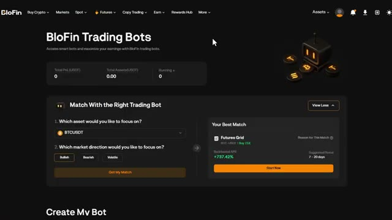
🔍 Agrandir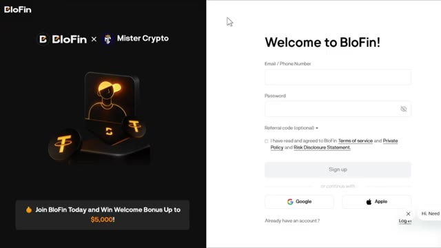
🔍 AgrandirIci, vous pouvez voir tous les bonus disponibles, les bonus de dépôt, les récompenses sur le volume de trading, et bien plus encore. Assurez-vous de les réclamer. C'est littéralement de l'argent gratuit juste pour utiliser la plateforme. Les bonus exacts dépendent de votre région et du statut de votre compte. Vérifiez donc votre centre de récompenses pour voir ce qui est disponible pour vous. Très bien, vous savez maintenant comment utiliser absolument tous les bots de trading sur Blowfin.
Interface & Outils : Interface web de l'échange de cryptomonnaies BloFin (Rewards Hub).
Contenu textuel & Code : Panneaux détaillant divers bonus : "Trading Gifts (Futures) Week 10" avec des paliers (10 USDT, 15 USDT, 30 USDT, 60 USDT) basés sur le volume de trading, et "Copy Trading Gifts Week 10" avec des récompenses proportionnelles.
Action / Démonstration : Navigation et présentation des différentes tâches avancées et récompenses disponibles pour les utilisateurs sur la plateforme.
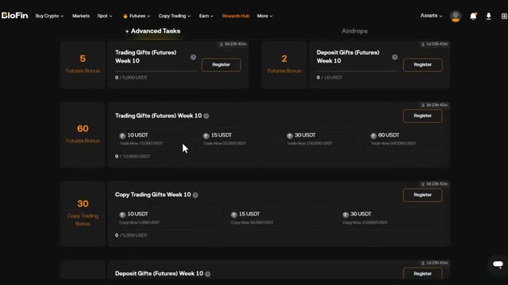
🔍 AgrandirQue vous souhaitiez profiter de la volatilité avec des robots de grille, accumuler avec le DCA, automatiser vos stratégies de trading et de visualisation avec des robots de signaux, ou exécuter des ordres importants avec le TWAP, vous avez les outils nécessaires. Et n'oubliez pas, si vous vous êtes inscrit avec mon lien dans la description, assurez-vous de consulter le centre des récompenses et de réclamer vos bonus. Si vous souhaitez une présentation plus détaillée de la plateforme Blowfin, de la manière d'effectuer un dépôt, de trader des contrats à terme et d'utiliser toutes les fonctionnalités, cliquez sur la vidéo qui apparaît à l'écran dès maintenant.
Interface & Outils : BloFin, interface de trading crypto, graphique TradingView.
Contenu textuel & Code : Types de bots disponibles (Futures Grid, Futures DCA, Spot Grid, Spot DCA, Signal Bot, TWAP), graphique des prix du BTC/USDT (chandeliers japonais en unités 4h), carnet d'ordres, paramètres de création de robot (effet de levier 5x, signaux TradingView).
Action / Démonstration : Présentation des différents types de robots de trading automatisés et de leurs options de configuration sur la plateforme BloFin.
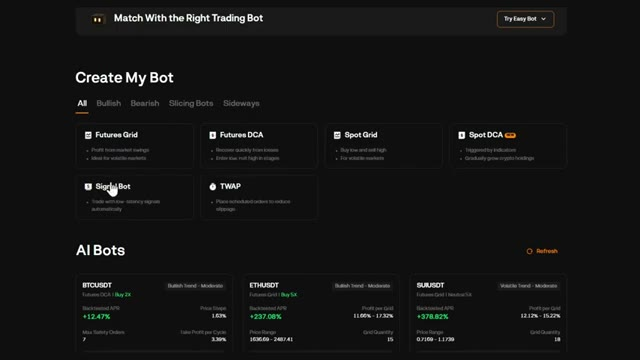
🔍 Agrandir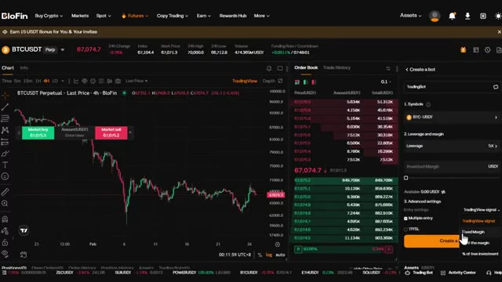
🔍 AgrandirMerci d'avoir regardé, et je vous dis à la prochaine.
Interface & Outils : Aucune interface visible.
Contenu textuel & Code : Aucun contenu technique, graphique, code ou donnée chiffrée.
Action / Démonstration : Aucune action ou manipulation en cours.